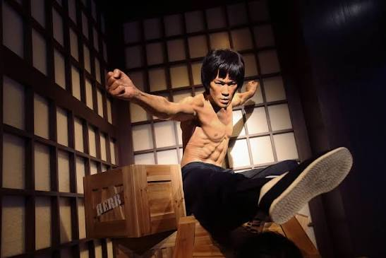

When it comes to more prominent expectations of martial arts filmography, the 1970s is often what people may think of when the first images of "Kung Fu Films" come to mind. Why is that, you wonder? It's due in no small part to incredible actors and the precedence taken on faster-paced action and deeply involved plots. All of course, inspired by the gradually budding megapower known as: Hollywood!
While Kung Fu Films were originally prioritized for Eastern Audiences with the attempt to breathe new life into the Peking Opera Scene, directors and actors of this era begun to look towards the absolutely monstrous boom of filmmaking popularity that was Hollywood in the late 1960s. Considered to be the start of the 'Golden Age' of movies, Eastern filmmakers began to deeply research just what exactly made Western movies as successful as they had been. The dazzle of Hollywood filmmaking tactics and stories were immediately attractive to the East, with all-time great martial arts film actor Bruce Lee being widely considered to be the man behind kung-fu filmography becoming popularized in the West. Martial Arts Film Actors that have been engrained in the annals of time are more commonly known to have received their breakout role in this era of filming, with some of the most popular martial arts films of all time being from the 1970s.
Five-Deadly Venoms
Enter the Dragon
Kid With The Golden Arms
36th Chamber of Shaolin
Game of Death
Snake in Eagle's Shadow